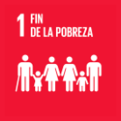
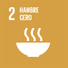
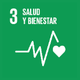
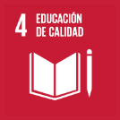
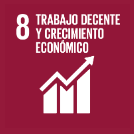
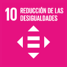
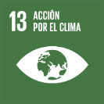

Nuestro aporte a los Objetivos de Desarrollo Sostenible
Nuestro trabajo con niños, niñas y adolescentes de Kennedy, y con sus familias, aporta a siete Objetivos de Desarrollo Sostenible (ODS) de las Naciones Unidas. Aquí te contamos cuáles son y cómo trabajamos.
Problemáticas
Las problemáticas que abordamos
Nuestro trabajo responde a cuatro problemáticas:
- Pobreza extrema
- Desempleo
- Deserción escolar
- Educación
Cómo las abordamos
- Seguridad alimentaria
- Proveemos seguridad alimentaria a familias que están en pobreza extrema.
- Mejoramiento de la calidad de vida
- Proveemos herramientas para mejorar la calidad de vida.
- Educación
- Formamos habilidades en los niños y jóvenes con clases de fútbol, artes y música, y con acompañamiento académico.
- Desarrollo económico
- Desarrollamos habilidades productivas con capacitación y patrocinio educativo.
Nuestro apoyo al desarrollo sostenible por confirmar
Los siete ODS a los que aportamos
Para los cuatro primeros señalamos también la meta de 2030 a la que contribuye nuestro trabajo.
-

ODS 1 Fin de la pobreza
Meta 1.2: «Para 2030, reducir al menos a la mitad la proporción de hombres, mujeres y niños y niñas de todas las edades que viven en la pobreza en todas sus dimensiones con arreglo a las definiciones nacionales».
-

ODS 2 Hambre cero
Meta 2.1: «Para 2030, poner fin al hambre y asegurar el acceso de todas las personas, en particular los pobres y las personas en situaciones vulnerables, incluidos los lactantes, a una alimentación sana, nutritiva y suficiente durante todo el año».
-

ODS 3 Salud y bienestar
Meta 3.4: «Para 2030, reducir en un tercio la mortalidad prematura por enfermedades no transmisibles mediante la prevención y el tratamiento y promover la salud mental y el bienestar».
-

ODS 4 Educación de calidad
Meta 4.4: «De aquí a 2030, aumentar considerablemente el número de jóvenes y adultos que tienen las competencias necesarias, en particular técnicas y profesionales, para acceder al empleo, el trabajo decente y el emprendimiento».
-

ODS 8 Trabajo decente y crecimiento económico
-

ODS 10 Reducción de las desigualdades
-

ODS 13 Acción por el clima
Los íconos de los ODS son de las Naciones Unidas. Aquí solo identifican cada objetivo y no implican respaldo de las Naciones Unidas a la fundación.
Conoce más en nuestra presentación
Nuestra presentación 2024 cuenta, proyecto por proyecto, a qué objetivo de desarrollo sostenible aporta cada uno.
-
Presentación 2024 (PDF de 15 MB, se abre en una pestaña nueva)
La presentación de la fundación: las problemáticas que aborda, sus proyectos con sus cifras y el objetivo de desarrollo sostenible de cada proyecto.
También en Nuestro trabajo
-
Nuestros programas
Los seis programas con los que acompañamos a los niños y a sus familias.
Ver los programas -
Efectos de nuestros programas
Lo que cambia con nuestros programas y los doce resultados que publicamos para 2023.
Ver los resultados de 2023 -
Nuestro aporte a la agenda de desarrollo nacional
Cómo se relaciona nuestro trabajo con la agenda de desarrollo nacional. contenido pendiente
Ver la página sobre la agenda de desarrollo nacional -
Boletines de gestión
El boletín «Un lugar en acción» de 2023 y el informe de gestión social de 2022.
Ver los boletines e informes -
Certificado de trayectoria
El certificado de trayectoria de 2024 y el RUT de la fundación.
Ver los documentos del certificado y el RUT -
Educarte, formación en línea
La plataforma de formación en línea de la fundación.
Ir a Educarte.info (se abre en una pestaña nueva)
Conoce los programas detrás de este aporte
Nuestros seis programas llevan este trabajo a los niños y a sus familias.
Pendientes de confirmación (vista previa)
Cada elemento marcado por confirmar en esta página depende de una suposición de trabajo o de información que la fundación aún no ha confirmado. Nada se publica hasta que la fundación lo confirme.
- ODS: los siete objetivos (1, 2, 3, 4, 8, 10 y 13) vienen de los íconos de la página actual, y las cuatro metas (1.2, 2.1, 3.4 y 4.4), de la página «Efecto». Ningún texto de la fundación explica el aporte al ODS 13 (Acción por el clima): confirmar si se mantiene.
- Íconos de los ODS: son capturas de pantalla de baja resolución; antes de publicar, reemplazarlos por los íconos oficiales en español de las Naciones Unidas.
- Presentación 2024: es de febrero de 2024 e incluye trece proyectos (siete ya no están en el menú), cifras de 2023 y acumuladas, y estadísticas de otras fuentes sin verificar; confirmar si sigue vigente o si hay una versión nueva.
- Agenda de desarrollo nacional: la página enlazada tiene contenido pendiente.
- Pie de página: NIT y dirección registrada; que los números de WhatsApp y los correos sean los públicos.